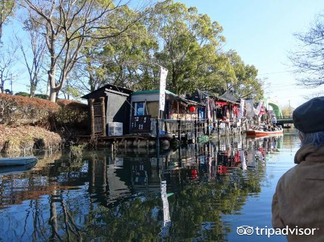

柳川市是位于日本福冈县南部的一个城市。在市内出现大量运河，又被称为水都。市内的西南部是商业中心地，以种植海苔为主。此外是诗人北原白秋的家乡。柳川是朱之瑜（朱舜水）先生（浙江余姚人）寓居日本时的学生、日本“西海巨儒”安东省庵的故乡，朱之瑜和安东省庵之间的师生情谊在当地传为千古美谈。

对于很多旅行者来说，只是匆匆的走过这座安静的小城市，可能很难留下太多深刻的印象。因为，与其他的大城市相比，柳川很难拿出可以作为最好最大或者最受欢迎的城市景观，这里太过安宁，太过于平凡了。但是，正是这种安宁和平凡，更使得它具有了另外一种别样的安静的美。对于厌倦了喧嚣和繁华的都市人来说，花上几天的时间，来到这座安静的小城呆上几天，也许会是一个放松心情，舒缓身心的好选择。
柳川市的突然火爆，原因是网络上流传的旅游宣传片十分诱人，看完宣传片后，相信你也会爱上这座城市~